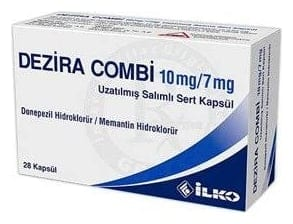

Dezira Combi 10 mg/7 mg Uzatılmış Salımlı Sert Kapsül, 28 Adet

Ne için kullanılır
KT · Bölüm 1DEZİRA COMBİ, turuncu-beyaz renkli opak kapsüller olup 28 kapsüllük ambalajlarda piyasaya sunulmaktadır. DEZİRA COMBİ, piperidin tipi geri dönüşümlü asetilkolinesteraz inhibitörü olan donepezil ve NMDA (N-metil-D-aspartat) reseptör antagonistleri denilen bir ilaç grubuna dahil olan memantinin kombinasyonudur. Günde 10 mg donepezil içeren ilaç tedavisi ile durumu stabilize edilen hastalarda, orta ve şiddetli Alzheimer tipi bunama belirtilerinin tedavisi için kullanılan bir ilaçtır.